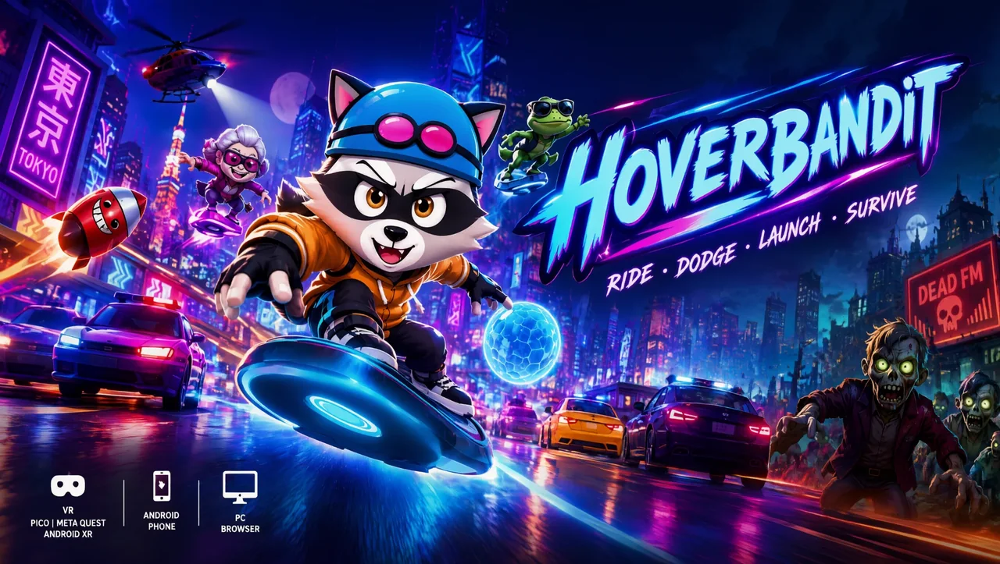

Lean. Duck. Don't blink.
Hoverbandit
A neon arcade hoverboard runner for VR headsets, Android phones and the web browser. Ride through rush-hour traffic: lean to switch lanes, duck under barriers, grab a bus to slingshot ahead and race other players' ghosts on daily leaderboards, all to a radio of synthwave, drum & bass and lo-fi.
Coming to:
- PICO
- Meta Quest
- Android XR
- Google Play
- Web browser

How to play
Hoverbandit is an arcade endless runner on a hoverboard. Switch lanes through rush-hour traffic, skim past cars to chain near misses, boost when the road opens and grab a passing bus to slingshot ahead. In VR you lean your body to steer, squat to duck and reach out to grab, with controllers or hand tracking, standing or seated. On a phone you swipe; in the browser you use the keys.
Modes
- Endless runs through 12 zones, from Neon Night and Neon Tokyo to Snow Pass and Hollow Woods
- Daily Run and Daily Mixtape: the same three mods for everyone, then race your ghost on the leaderboard
- Routes: 48 hand-made challenges with three stars each, and Pursuit, a police chase with rising heat
- Radio Hits, a rhythm mode where traffic moves to the beat of 15 songs
- Rush Hour of the Dead, an opt-in cartoon zombie night (comedy, no gore)
Comfort options, stream-safe music
Comfort presets (vignette, lane snap, speed cap) and seated play are built in. All music is generated in code, so there is no licensed music in your stream, and Chat Chaos lets Twitch chat vote on what hits your ride. Plays offline. 9 languages.